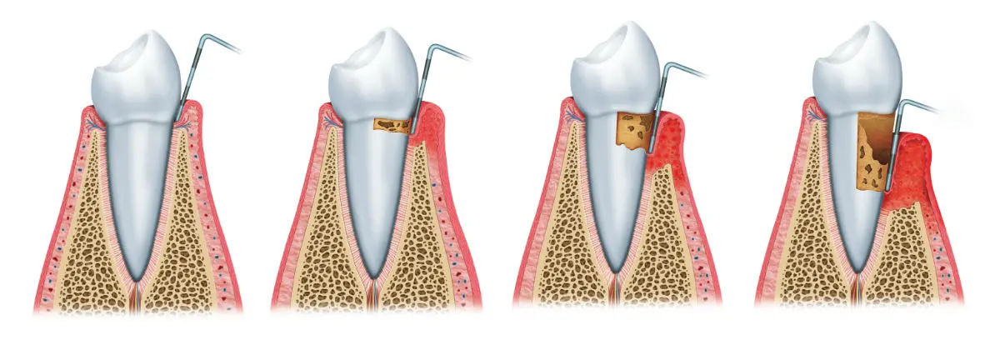

Conoce más de nuestros servicios
¿Qué es la periodoncia?
- La periodoncia es una especialidad odontológica centrada en el tratamiento de las enfermedades que afectan a la encía, a los tejidos de soporte dental y a la estructura ósea maxilar.
Solucionar los problemas periodontales a tiempo, en las primeras fases, te ayudará a evitar la pérdida prematura de las piezas dentales afectadas.
- Fase de higienización: tras una valoración del estado de salud general, oral y periodontal que determine el diagnóstico preciso de tu enfermedad, se efectúa una evaluación radiográfica. A continuación, se realiza un tratamiento desinflamatorio o de higienización.
- Fase de control: el profesional especializado determinará una serie de pautas para que mantengas una higiene oral adecuada. Los controles dentales periódicos y las profilaxis anuales complementarán la evolución correcta del tratamiento y contendrán el desarrollo negativo de la enfermedad.
- Estudio periodontal: fase de reconocimiento y valoración diagnóstica. Se realiza un periodontograma y una serie radiográfica para calcular la pérdida de estructura ósea maxilar que presentas.
- Fase desinflamatoria: higienización dirigida a erradicar las bacterias acumuladas en la bolsa periodontal, es decir, raspado y alisado radicular.
- Control del resultado: fase de evaluación de la respuesta al tratamiento.
- Cirugía de acceso: elimina el cálculo acumulado y la infección de la zona profunda del tejido que da soporte a las piezas dentales, donde el raspaje tiene sus limitaciones de acceso.
- Cirugía resectiva: corrige el agrandamiento o deformidad de la encía.
- Cirugía plástica periodontal: trata las anomalías del tejido blando gingival.
- Cirugía periodontal regenerativa: ayuda a regenerar el hueso perdido.
Gracias a esta disciplina somos capaces de controlar problemas tan extendidos entre la población como la enfermedad periodontal.
Un tratamiento de periodoncia bien aplicado pondrá fin a tus molestias de encía y mejorará el estado de tu dentadura. Controlar las afecciones gingivales hoy en día es posible de forma efectiva gracias a las últimas técnicas desarrolladas dentro de esta especialidad en los últimos años.
¿Cuáles son las enfermedades periodontales más comunes y sus consecuencias si no se tratan?
Ahora que ya sabes qué es la periodoncia, es importante que también conozcas las enfermedades periodontales más usuales y de qué formas se puede presentar. Las patologías que mejor la definen son la gingivitis y la periodontitis. La pronta aplicación de un tratamiento personalizado ayudará a detener su avance y a disminuir el daño gingival y sus consecuencias. Profundizamos en ello para que valores tus situación con conciencia en el caso de que presentes algún síntoma:Gingivitis
La gingivitis es una patología que genera inflamación, sangrado e irritación de las encías. Si se trata a tiempo, es reversible. Si no recurres a un tratamiento especializado, esta enfermedad puede provocar problemas mucho más graves, derivando en una periodontitis.La principal causa de su sintomatología es la proliferación y acumulación de bacterias sobre las piezas dentales y los tejidos gingivales. Mantener unos buenos hábitos de higiene bucodental y realizar revisiones odontológicas periódicas es el mejor salvoconducto para controlarla.
Periodontitis
La periodontitis o piorrea suele ser la consecuencia de una gingivitis que no ha sido tratada a tiempo. Causa inflamación de los tejidos que soportan los dientes: encía, hueso, ligamento periodontal y cemento. Se trata de un problema grave y crónico que precisa seguimiento por parte de un especialista y un tratamiento adaptado a las circunstancias del paciente.Si sufres esta enfermedad y quieres evitar la pérdida de piezas dentales, recurre a un periodoncista especializado. Controlar la evolución negativa de la enfermedad y solucionar los daños en tu dentadura es posible.

Principales tratamientos de periodoncia
Dentro de esta rama odontológica existen diferentes tratamientos y técnicas periodontales que se adaptan a las circunstancias de cada paciente, no solo para tratar este tipo de enfermedades, sino también para mejorar la salud oral y la estética bucodental. Sigue leyendo y descubre algunos de ellos.Higiene oral y métodos preventivos
La higiene dental y la prevención son las bases del tratamiento periodontal. Además de mantener una higiene bucodental adecuada, es preciso realizar controles odontológicos periódicos. Estos son los secretos para mantener una boca sana y una sonrisa saludable:Efectuar una profilaxis dental también ayuda a cuidar y preservar el buen estado de tu boca. La limpieza dental profesional, además de eliminar la placa y el sarro acumulado con efectividad, te ayuda a prevenir las caries, las enfermedades gingivales y la pérdida prematura de piezas dentales.
Control de la gingivitis
El tratamiento de la gingivitis consta de varias fases que en su conjunto dan solución a la sintomatología de esta enfermedad periodontal. Te lo explicamos paso a paso.Control de la periodontitis
El tratamiento de la periodontitis contempla una serie de etapas de intervención caracterizadas cada una de ellas por la aplicación de técnicas adaptadas al grado de afección:En todos aquellos casos de periodontitis aguda donde se precise de una intervención quirúrgica es crucial recurrir a la experiencia y profesionalidad de un especialista en periodoncia. Son varias las cirugías a las que puedes recurrir si padeces este problema:
Corrección de la sonrisa gingival
La sonrisa gingival es un problema generado por la exposición excesiva de la encía al sonreír. Para muchas personas esto supone un problema estético.Recuperar la confianza en uno mismo y sentirse seguro cuando sonríes es muy importante a la hora de relacionarte y establecer tus contactos. Mejorar la sonrisa gingival te dará autoestima.
Cirugía preprotésica
Con la cirugía prepotésica se intervienen los tejidos que rodean a las piezas dentales con el fin de facilitar la implantación de una prótesis adaptada a las circunstancias del paciente. Son procedimientos quirúrgicos dirigidos a mejorar la estética y a devolver la funcionalidad oral.Esta técnica abarca varios procedimientos. Todos ellos destinados a ayudarte a conseguir la mejor versión de tu sonrisa. Aunque tu problema periodontal sea complejo, un buen profesional le dará solución.